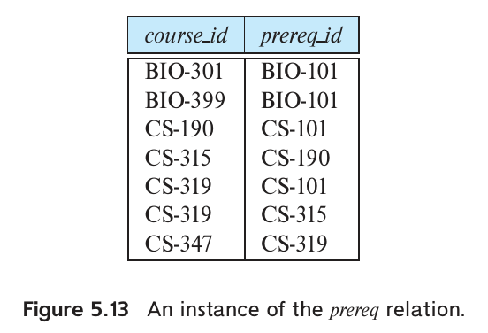
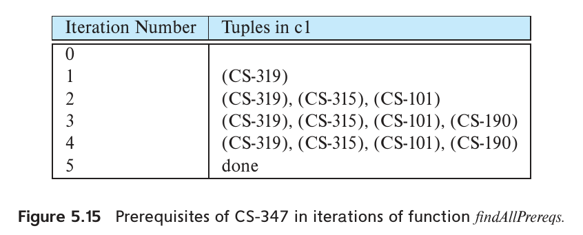
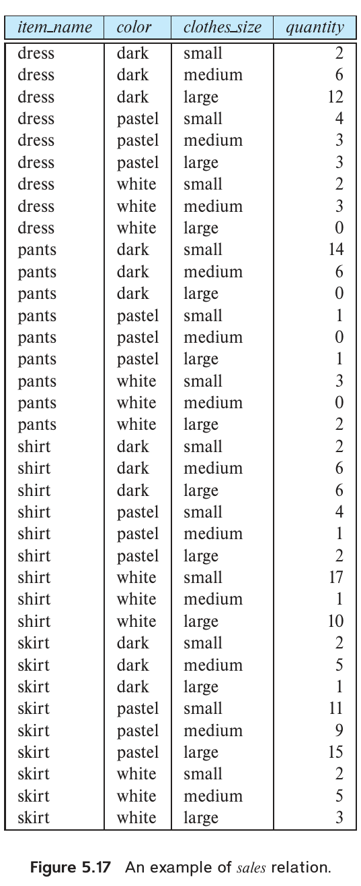
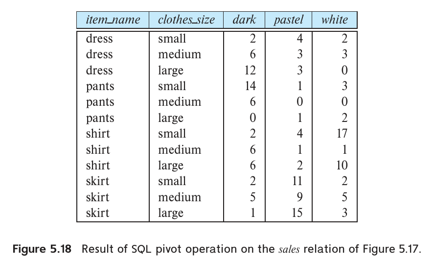
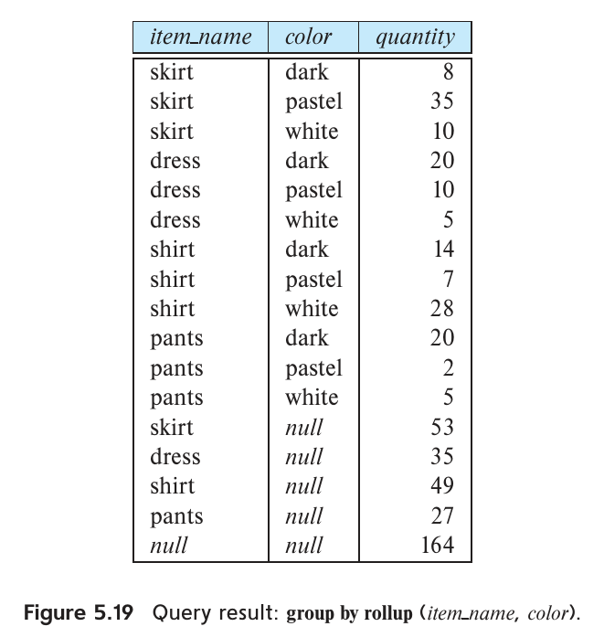
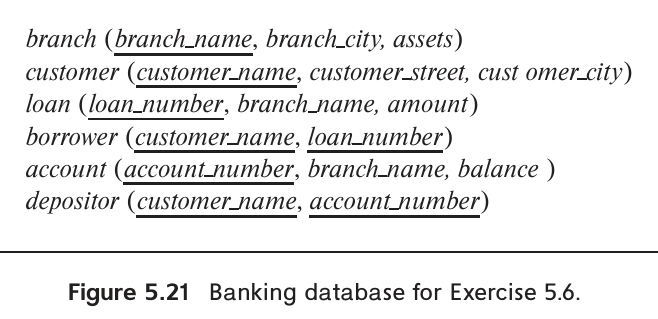
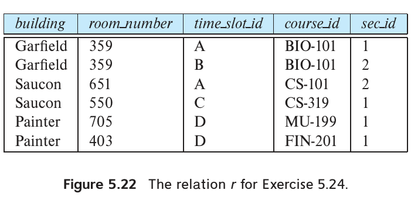

第5章 高级 SQL

第 3、4 章详细介绍了 SQL 的基本结构。本章首先讨论如何从通用编程语言访问 SQL，这对于构建使用数据库管理数据的应用十分重要。随后介绍 SQL 的一些高级特性，先说明如何在数据库内部执行过程式代码：既可以扩展 SQL 语言，使其支持过程式操作，也可以让用过程式语言定义的函数在数据库中执行。接着介绍触发器，用于规定在指定关系发生元组插入、删除或更新等事件时，自动执行哪些操作。最后讨论 SQL 支持的递归查询和高级聚集功能。
5.1 从编程语言访问 SQL
SQL 提供了强大的声明式查询语言。用 SQL 编写查询，通常比在通用编程语言中实现相同查询容易得多。不过，数据库程序员至少出于以下两个原因，仍需使用通用编程语言：
- SQL 不具备通用语言的全部表达能力，有些查询无法用 SQL 表达。例如，某些查询可以用 C、Java 或 Python 表达，却不能用 SQL 表达。为了编写这些查询，可以把 SQL 嵌入表达能力更强的语言中。
- 打印报表、与用户交互、把查询结果送到图形用户界面等非声明式操作，无法在 SQL 内完成。应用通常包含多个组成部分，数据查询和更新只是其中之一，其余部分由通用编程语言编写。要形成完整应用，就需要把 SQL 与通用编程语言结合起来。
从通用编程语言访问 SQL 有两种方式：
-
动态 SQL（dynamic SQL）。通用语言程序通过一组函数（过程式语言）或方法（面向对象语言）连接数据库服务器并与之通信。程序可以在运行时把 SQL 查询构造成字符串，提交查询，再逐个元组地把结果取入程序变量。SQL 的动态 SQL 部分允许程序在运行时构造并提交查询。
本章介绍连接 SQL 数据库并执行查询和更新的两项标准：JDBC 是 Java 的应用程序接口（5.1.1 节）；ODBC 最初为 C 语言开发，后来扩展到 C++、C#、Ruby、Go、PHP 和 Visual Basic 等语言（5.1.3 节）。5.1.2 节还演示如何通过 Python Database API，从 Python 程序连接数据库。
为 Visual Basic .NET 和 C# 设计的 ADO.NET API 也提供数据访问函数。从较高层次看，它们与 JDBC 函数相似，但具体细节不同。ADO.NET 还可以访问某些非关系数据源。相关细节可查阅在线手册，本章不再展开。
-
嵌入式 SQL（embedded SQL）。与动态 SQL 一样，它也允许程序与数据库服务器交互。但嵌入式 SQL 在编译时通过预处理器识别 SQL 语句，并把这些请求转换为函数调用。运行时，这些函数通过提供动态 SQL 功能的 API 连接数据库；该 API 可能是特定数据库专用的。5.1.4 节简要介绍嵌入式 SQL。
SQL 与通用语言结合时，一个主要困难是两者操作数据的方式不匹配。SQL 的主要数据类型是关系，语句对关系进行操作，并返回关系。编程语言通常一次操作一个变量，变量大致对应关系中某个元组的一个属性值。把两类语言整合到同一个应用中，需要提供一种机制，以程序能够处理的形式返回查询结果。
本节的例子假设我们访问的是服务器上数据库系统所管理的数据库。印刷第 198 页的注 5.1 介绍另一种使用嵌入式数据库的方法。
5.1.1 JDBC
JDBC 标准定义了 Java 程序连接数据库服务器所用的应用程序接口（API）。JDBC 最初是 Java Database Connectivity 的缩写，如今已不再使用这个全称。
图 5.1 展示了使用 JDBC 接口的 Java 代码。Java 程序必须导入 java.sql.*，其中包含 JDBC 各项功能的接口定义。
public static void JDBCexample(String userid, String passwd)
{
try (
Connection conn = DriverManager.getConnection(
"jdbc:oracle:thin:@db.yale.edu:1521:univdb",
userid, passwd);
Statement stmt = conn.createStatement();
) {
try {
stmt.executeUpdate(
"insert into instructor values('77987','Kim','Physics',98000)");
}
catch (SQLException sqle) {
System.out.println("Could not insert tuple. " + sqle);
}
ResultSet rset = stmt.executeQuery(
"select dept_name, avg (salary) "+
" from instructor "+
" group by dept_name");
while (rset.next()) {
System.out.println(rset.getString("dept_name") + " " +
rset.getFloat(2));
}
}
catch (Exception sqle)
{
System.out.println("Exception : " + sqle);
}
}
图 5.1 JDBC 代码示例。
5.1.1.1 连接数据库
Java 程序访问数据库的第一步是建立连接。这一步确定使用哪个数据库，例如本机上的 Oracle 实例，或另一台机器上的 PostgreSQL 数据库。只有建立连接后，Java 程序才能执行 SQL 语句。
调用 java.sql 中 DriverManager 类的 getConnection() 方法建立连接。这个方法接受三个参数。1
- 第一个参数是字符串，指定服务器所在机器的 URL 或机器名（本例为 db.yale.edu），也可能包含其他信息，如与数据库通信所用的协议（本例为
jdbc:oracle:thin:，稍后解释为何需要它）、数据库通信端口（本例为 2000），以及服务器上的具体数据库（本例为 univdb）。JDBC 只规定 API，没有规定通信协议。一个 JDBC 驱动可能支持多种协议，必须指定数据库和驱动都支持的一种。协议细节由厂商决定。 - 第二个参数是数据库用户标识符，以字符串表示。
- 第三个参数是密码，也以字符串表示。需要留意，在 JDBC 代码中指定密码会带来安全风险：未经授权的人若能访问 Java 代码，就可能取得密码。
图中的例子创建了一个 Connection 对象，句柄为 conn。
译注：本段原文把端口写为 2000，图 5.1 的连接字符串实际使用 1521。
支持 JDBC 的数据库产品都会提供 JDBC 驱动，主流数据库厂商均如此。Java 访问数据库之前必须先动态加载驱动，然后才能建立连接。从厂商网站下载适当驱动并将其加入 classpath 后，getConnection() 会找到所需驱动。2 驱动负责把与产品无关的 JDBC 调用转换成特定数据库管理系统所需的调用。与数据库交换信息的实际协议由所用驱动决定，JDBC 标准没有规定它。有些驱动支持多种协议，应根据数据库产品的支持情况选择。本例建立连接时，字符串 jdbc:oracle:thin: 指定 Oracle 支持的一种协议，MySQL 对应的写法是 jdbc:mysql:。
5.1.1.2 向数据库系统发送 SQL 语句
建立连接后，程序就可以通过 Statement 实例，把 SQL 语句发送给数据库系统执行。Statement 对象提供一组方法，Java 程序调用这些方法，把作为参数传入的 SQL 语句发送到数据库执行。Statement 是发送语句的接口对象，本身不对应某一条 SQL 语句。本例在连接 conn 上创建了 Statement 句柄 stmt。
执行语句时，根据它是否返回结果集，调用 executeQuery() 或 executeUpdate()。查询使用前者；update、insert、delete、create table 等非查询语句使用后者。本例的 stmt.executeUpdate() 执行向 instructor 插入元组的更新语句。它返回一个整数，表示插入、更新或删除的元组数；对 DDL 语句，返回值为 0。
5.1.1.3 异常与资源管理
执行任何 SQL 方法都可能抛出异常。try { … } catch { … } 结构允许捕获 JDBC 调用中的异常（错误条件），并采取适当措施。编写 JDBC 程序时，区分 SQL 专用的 SQLException 与一般的 Exception 往往很有用；后者可能是任何 Java 异常，如空指针异常或数组下标越界异常。图 5.1 展示了两者。示例为了简洁，省略了实际程序中应当编写的更完整的异常处理。
创建连接、语句及其他 JDBC 对象都会消耗系统资源。程序员必须确保程序关闭所有这些资源，否则数据库系统的资源池可能耗尽，使系统在超时到期之前无法访问或无法运行。一种做法是显式调用方法关闭连接和语句，但如果代码因异常退出，跳过了包含 close 调用的语句，这种方式就会失效。更合适的做法是使用 Java 的 try-with-resources 结构。图 5.1 在 try 后的圆括号中打开连接和语句对象，没有把这些操作放进花括号内的主体。圆括号中打开的资源会在 try 块结束时自动关闭，从而避免遗留未关闭的连接或语句。关闭语句还会隐式关闭为该语句打开的对象，包括下一节介绍的 ResultSet。这样就能避免资源未关闭的问题。3
图 5.1 也可以显式调用 conn.close() 关闭连接、调用 stmt.close() 关闭语句，但本例无须这么做。
5.1.1.4 获取查询结果
图 5.1 用 stmt.executeQuery() 执行查询，把结果元组集合放在 ResultSet 对象 rset 中，再逐个获取元组。结果集的 next() 方法检查是否还有未取出的元组；如果有，就取出下一个。其返回值为布尔值，表示是否成功取得元组。
已取得元组的属性通过各种以 get 开头的方法读取。getString() 可以读取任意基本 SQL 数据类型，并转换为 Java String 对象，也可以使用类型限制更严格的 getFloat() 等方法。各个 get 方法的参数既可以是表示属性名的字符串，也可以是表示属性在元组中位置的整数。图 5.1 展示了两种方式：通过属性名 dept_name 读取，以及通过位置 2 读取第二个属性。
5.1.1.5 预编译语句
可以创建预编译语句（prepared statement），用“?”替代部分值，表示实际值稍后提供。数据库系统在准备语句时编译查询，以后每次用新的参数替换问号执行时，都可以复用已编译的查询。图 5.2 演示其用法。
PreparedStatement pStmt = conn.prepareStatement(
"insert into instructor values(?,?,?,?)");
pStmt.setString(1, "88877");
pStmt.setString(2, "Perry");
pStmt.setString(3, "Finance");
pStmt.setInt(4, 125000);
pStmt.executeUpdate();
pStmt.setString(1, "88878");
pStmt.executeUpdate();
图 5.2 JDBC 代码中的预编译语句。
Connection 的 prepareStatement() 方法定义一个可以含参数的查询。有些 JDBC 驱动会在执行该方法时把查询提交给数据库编译，另一些驱动此时还不联系数据库。方法返回 PreparedStatement 对象，此时尚未执行任何 SQL 语句。实际执行由 PreparedStatement 的 executeQuery() 和 executeUpdate() 完成，但调用前必须先为“?”参数赋值。setString() 以及处理其他基本 SQL 类型的 setInt() 等方法用于设置参数。第一个实参指定要赋值的参数位置：首个参数的位置为 1，这与 Java 中多数从 0 开始的结构不同。第二个实参指定要赋的值。
图 5.2 先准备 insert 语句，设置问号参数，再调用 executeUpdate()。最后两行说明，参数值在显式重新赋值前一直保持不变。最后一次 executeUpdate() 插入的是元组 ("88878", "Perry", "Finance", 125000)。
同一查询只编译一次，再以不同参数多次运行时，预编译语句能提高效率。它还有一个更重要的优点：只要查询使用用户输入的值，即使只执行一次，也应优先使用预编译语句。假设程序读入用户输入，再通过 Java 字符串操作构造 SQL。用户若输入单引号等特殊字符，除非程序十分仔细地检查输入，否则生成的语句可能存在语法错误。setString() 会自动处理这些情况，插入必要的转义字符，保证语法正确。
在本例中，假设 ID、name、dept_name 和 salary 由用户输入，程序需要向 instructor 插入相应行。如果不使用预编译语句，而用下面的 Java 表达式拼接查询：
"insert into instructor values(' " + ID + " ', ' " + name + " ', " +
" '" + dept_name + " ', " + salary + ")"
随后直接用 Statement 对象的 executeQuery() 执行。请注意，字符串中的单引号会包围生成查询中的 ID、name 和 dept_name 值。此时，只要用户在 ID 或 name 中输入单引号，查询字符串就会有语法错误。教师姓名完全可能包含撇号，例如“O'Henry”。
译注：原文此处写 executeQuery()；前面构造的是 insert，应按 5.1.1.2 节使用 executeUpdate()。
上面的情况还只是使用上的麻烦，更严重的问题是：恶意攻击者可以利用称为 SQL 注入（SQL injection）的技术窃取数据或破坏数据库。
假设 Java 程序读入字符串 name，构造以下查询：
"select * from instructor where name = '" + name + "'"
如果用户输入的内容是：
X' or 'Y' = 'Y
生成的表达式就变为：
"select * from instructor where name = '" + "X' or 'Y' = 'Y" + "'"
也就是：
select * from instructor where name = 'X' or 'Y' = 'Y'
where 条件恒为 true，整个 instructor 关系都会被返回。
更狡猾的恶意用户还可能设法获取更多数据，包括密码等凭据，继而连接数据库并执行任意操作。对更新语句进行 SQL 注入，也可以改变写入目标列的值。现实中已有许多 SQL 注入攻击；多个金融网站遭到这类攻击，并导致大额资金被盗。
使用预编译语句可以避免这一问题，因为输入字符串会被加入转义字符，得到的查询变为：
"select * from instructor where name = 'X\' or \'Y\' = \'Y'
这个查询无害，只会返回空关系。
译注：上例按原文保留了转义写法，开头的双引号在原图中也没有配对。参数绑定保证输入作为参数数据处理，不能把反斜线转义当作所有数据库通用的拼接方法。参见 Oracle JDBC 参数化语句说明。
程序员必须通过预编译语句的参数把用户输入的字符串传给数据库。把用户输入直接拼接进 SQL 查询会带来严重安全风险，任何程序都不应这样做。
有些数据库系统允许在一次 JDBC execute 方法调用中执行多条 SQL 语句，以分号分隔。有些 JDBC 驱动默认关闭这项功能，因为它允许恶意用户通过 SQL 注入插入完整语句。例如，在上面的例子中，攻击者可以输入：
X'; drop table instructor; --
这会向数据库提交包含两条语句、以分号分隔的查询字符串。语句以 JDBC 连接所使用的数据库用户身份执行，因而可能执行 drop table，或更新用户选择的任何表，造成严重破坏。有些数据库仍允许这样执行多条语句，正确使用预编译语句、防止 SQL 注入就十分重要。
5.1.1.6 可调用语句
JDBC 还提供 CallableStatement 接口，允许调用 SQL 存储过程和函数（见 5.2 节）。它对函数和过程的作用，类似 prepareStatement 对查询的作用。
CallableStatement cStmt1 = conn.prepareCall("{? = call some_function(?)}");
CallableStatement cStmt2 = conn.prepareCall("{call some_procedure(?,?)}");
函数返回值和过程输出参数的数据类型必须通过 registerOutParameter() 注册，之后可以用类似结果集的 get 方法读取。详细信息请查阅 JDBC 手册。
5.1.1.7 元数据功能
如前所述，Java 应用程序中没有数据库数据的声明；这些声明属于 SQL DDL 语句。因此，使用 JDBC 的 Java 程序要么在代码中写死对数据库模式的假设，要么在运行时直接向数据库查询这些信息。通常后一种方式更合适，应用能更好地适应模式变化。
通过 executeQuery() 提交查询后，结果保存在 ResultSet 对象中。ResultSet 的 getMetaData() 方法返回 ResultSetMetaData 对象，其中包含结果集的元数据。后者又提供方法，获取结果的列数、指定列的名称和类型等信息。这样，即使事先不知道结果模式，也能编写代码执行查询。
下面这段 Java 代码使用 JDBC 打印结果集中所有列的名称和类型。假设 rs 引用执行查询得到的 ResultSet 实例。
ResultSetMetaData rsmd = rs.getMetaData();
for(int i = 1; i <= rsmd.getColumnCount(); i++) {
System.out.println(rsmd.getColumnName(i));
System.out.println(rsmd.getColumnTypeName(i));
}
getColumnCount() 返回结果关系的元数，即属性个数，据此便可遍历各属性。按照 JDBC 的惯例，序号从 1 开始。对于每个属性，分别通过 getColumnName() 和 getColumnTypeName() 取得名称和数据类型。
DatabaseMetaData 接口提供查询数据库元数据的方法。Connection 的 getMetaData() 返回 DatabaseMetaData 对象，后者提供大量方法，获取应用所连接的数据库及数据库系统的信息。
例如，一些方法返回数据库系统的产品名和版本号，另一些方法允许应用查询数据库支持哪些功能。
DatabaseMetaData dbmd = conn.getMetaData();
ResultSet rs = dbmd.getColumns(null, "univdb", "department", "%");
// Arguments to getColumns: Catalog, Schema-pattern, Table-pattern,
// and Column-Pattern
// Returns: One row for each column; row has a number of attributes
// such as COLUMN_NAME, TYPE_NAME
while( rs.next()) {
System.out.println(rs.getString("COLUMN_NAME"),
rs.getString("TYPE_NAME");
}
图 5.3 用 JDBC 的 DatabaseMetaData 查找列信息。
译注：原图的 println 使用逗号分隔两个字符串，且缺少右括号。该行可写为
System.out.println(rs.getString("COLUMN_NAME") + " " + rs.getString("TYPE_NAME"));。
注释译文：getColumns 的参数依次为目录、模式名模式、表名模式、列名模式。结果中每列对应一行，行中包含 COLUMN_NAME、TYPE_NAME 等多个属性。
还有一些方法返回数据库本身的信息。图 5.3 展示了如何获取数据库关系的列（属性）信息。假设 conn 是已经打开的数据库连接句柄。getColumns() 接受四个参数：目录名（null 表示忽略目录）、模式名模式、表名模式、列名模式。后三者可以指定名称，也可以指定匹配模式。模式可以使用 SQL 字符串匹配的特殊字符“%”和“_”；例如，“%”匹配所有名称。只有符合这些名称或模式条件的模式和表中的列才会被返回。结果集每行对应一列，包含目录名、模式名、表名、列名、列类型等属性。
getTables() 方法可以获取数据库中全部表的列表。前三个参数与 getColumns() 相同，第四个参数限制返回的表类型。若设为 null，会返回包括系统内部表在内的所有表；也可以限定只返回用户创建的表。
DatabaseMetaData 的其他方法还包括获取主键的 getPrimaryKeys()、获取外键引用的 getCrossReference()，以及查询授权、最大连接数等数据库限制的方法。
元数据接口可以用于多种任务。例如，编写数据库浏览器，让用户查找数据库中的表、查看模式和行、通过选择操作查看指定行等。借助元数据，这些任务的代码可以具有通用性。例如，显示关系中各行的代码可以适用于任意模式的关系。类似地，也可以编写代码，接收查询字符串、执行查询，并把结果打印为格式整齐的表格，而不依赖具体提交了什么查询。
5.1.1.8 其他功能
JDBC 还提供可更新结果集等功能。对于在数据库关系上执行选择和/或投影的查询，可以创建可更新结果集。更新结果集中的元组，就会更新数据库关系中对应的元组。
回顾 4.3 节，事务允许把多个操作视为可提交或回滚的单个原子单元。默认情况下，每条 SQL 语句都被视为一个单独事务，并自动提交。JDBC Connection 的 setAutoCommit() 可以开关这一行为。如果 conn 是打开的连接，conn.setAutoCommit(false) 会关闭自动提交，此后必须显式调用 conn.commit() 或 conn.rollback()。conn.setAutoCommit(true) 则重新打开自动提交。
JDBC 提供了处理大对象的接口，无须把整个对象放在内存中。ResultSet 的 getBlob() 和 getClob() 与 getString() 类似，但分别返回 Blob 和 Clob 对象。这些对象保存大对象的“定位器”，即指向数据库中实际对象的逻辑指针，不会存下整个大对象。从它们获取数据，类似从文件或输入流读取，可以使用 getBytes()、getSubString() 等方法。
反过来，要把大对象存入数据库，PreparedStatement 允许通过 setBlob(int parameterIndex, InputStream inputStream)，把 blob 列与输入流（例如已经打开的文件）关联起来。执行预编译语句时，数据从输入流读入并写入数据库的 blob。clob 列可以通过 setClob() 设置，该方法接受参数序号和字符流。
JDBC 还提供行集（row set）功能，可以收集结果集并传送给其他应用。行集可以向前或向后扫描，也可以修改。
5.1.2 从 Python 访问数据库
图 5.4 展示了从 Python 访问数据库的方法。其中的 insert 语句演示了相当于 JDBC 预编译语句的 Python 写法：SQL 中用“%s”表示参数，并以列表提供参数值。更新不会自动提交，必须调用 commit()。
import psycopg2
def PythonDatabaseExample(userid, passwd)
try:
conn = psycopg2.connect(host="db.yale.edu", port=5432,
dbname="univdb", user=userid, password=passwd)
cur = conn.cursor()
try:
cur.execute("insert into instructor values(%s, %s, %s, %s)",
("77987", "Kim", "Physics", 98000))
conn.commit();
except Exception as sqle:
print("Could not insert tuple. ", sqle)
conn.rollback()
cur.execute(("select dept_name, avg (salary) "
" from instructor group by dept_name"))
for dept in cur:
print dept[0], dept[1]
except Exception as sqle:
print("Exception : ", sqle)
图 5.4 从 Python 访问数据库。
译注：原图的函数声明末尾漏了冒号；
print dept[0], dept[1]使用 Python 2 写法。在 Python 3 中，两处分别应为def PythonDatabaseExample(userid, passwd):和print(dept[0], dept[1])。
try/except 块展示了如何捕获异常并打印异常信息。for 循环演示如何遍历查询执行结果，以及访问某一行的各个属性。
这个程序使用 psycopg2 驱动连接 PostgreSQL，并在第一行导入驱动。驱动通常针对特定数据库，例如 MySQLdb 连接 MySQL，cx_Oracle 连接 Oracle；pyodbc 则可以连接大多数支持 ODBC 的数据库。许多数据库驱动都实现了程序使用的 Python Database API，但各驱动的 API 存在细微差异，特别是 connect() 的参数，这一点与 JDBC 不同。
5.1.3 ODBC
开放数据库连接（Open Database Connectivity，ODBC）标准定义了一个 API，应用可以用它连接数据库、发送查询和更新、取得结果。图形用户界面、统计软件包、电子表格等应用，可以通过同一个 ODBC API 连接任意支持 ODBC 的数据库服务器。
每个支持 ODBC 的数据库系统都提供一个库，客户端程序需要与它链接。客户端发出 ODBC API 调用时，库中的代码与服务器通信，完成请求并取得结果。
void ODBCexample()
{
RETCODE error;
HENV env; /* environment */
HDBC conn; /* database connection */
SQLAllocEnv(&env);
SQLAllocConnect(env, &conn);
SQLConnect(conn, "db.yale.edu", SQL_NTS, "avi", SQL_NTS,
"avipasswd", SQL_NTS);
{
char deptname[80];
float salary;
int lenOut1, lenOut2;
HSTMT stmt;
char * sqlquery = "select dept_name, sum (salary) "
"from instructor "
"group by dept_name";
SQLAllocStmt(conn, &stmt);
error = SQLExecDirect(stmt, sqlquery, SQL_NTS);
if (error == SQL_SUCCESS) {
SQLBindCol(stmt, 1, SQL_C_CHAR, deptname, 80, &lenOut1);
SQLBindCol(stmt, 2, SQL_C_FLOAT, &salary, 0, &lenOut2);
while (SQLFetch(stmt) == SQL_SUCCESS) {
printf(" %s %g\n", deptname, salary);
}
}
SQLFreeStmt(stmt, SQL_DROP);
}
SQLDisconnect(conn);
SQLFreeConnect(conn);
SQLFreeEnv(env);
}
图 5.5 ODBC 代码示例。
译注：原图把 SQL 字符串排成三行；上面以 C 的相邻字符串字面量恢复换行，SQL 内容不变。
注释译文：environment 为环境，database connection 为数据库连接。
图 5.5 是使用 ODBC API 的 C 代码。首先要与服务器建立连接：先分配 SQL 环境，再分配数据库连接句柄。ODBC 定义了 HENV、HDBC 和 RETCODE 等类型。随后调用 SQLConnect 打开连接，参数包括连接句柄、目标服务器、用户标识符和数据库密码。SQL_NTS 表示前一个参数是以空字符结尾的字符串。
连接建立后，程序可以通过 SQLExecDirect 发送 SQL 命令。C 变量可以绑定到查询结果的属性上，调用 SQLFetch 取出元组时，相应属性值就存入这些变量。绑定由 SQLBindCol 完成：第二个参数是属性在结果中的位置，第三个参数指定从 SQL 到 C 所需的类型转换，接着是变量地址。对于字符数组等变长类型，最后两个参数给出变量最大长度，以及取出元组时存放实际长度的位置。长度字段返回负值表示值为 null。对于整数或浮点数等定长类型，最大长度参数被忽略，返回负长度仍表示 null。
SQLFetch 放在 while 循环中，持续执行，直到它返回 SQL_SUCCESS 以外的值。每次取出元组，程序都会按照 SQLBindCol 的设置，把值存入 C 变量并打印。
会话结束时，程序释放语句句柄、断开数据库连接，再释放连接句柄和 SQL 环境句柄。良好的编程习惯要求检查每次函数调用的结果，确保没有错误；本例为简洁起见省略了多数检查。
也可以创建带参数的 SQL 语句，例如 insert into department values(?,?,?)。问号是稍后提供的值的占位符。语句可以先在数据库中“准备”，即编译，然后不断提供实际参数重复执行。本例所需参数是 department 的系名、楼宇和预算。
ODBC 还提供完成其他任务的函数，例如查找数据库中的全部关系，以及查询结果或数据库关系的列名和类型。
默认情况下，每条 SQL 语句都是独立事务，并自动提交。SQLSetConnectOption(conn, SQL_AUTOCOMMIT, 0) 可以关闭连接 conn 的自动提交，之后必须显式调用 SQLTransact(conn, SQL_COMMIT) 提交，或调用 SQLTransact(conn, SQL_ROLLBACK) 回滚。
ODBC 标准定义了符合性级别，各级别对应标准功能的不同子集。一个实现可以只提供核心级别，也可以提供更高级的第 1 级或第 2 级功能。第 1 级要求能获取目录信息，例如有哪些关系、属性是什么类型。第 2 级进一步要求能发送和获取参数值数组，以及取得更详细的目录信息。
SQL 标准还定义了与 ODBC 类似的调用级接口（call level interface，CLI）。
5.1.4 嵌入式 SQL
SQL 标准定义了在 C、C++、Cobol、Pascal、Java、PL/I、Fortran 等语言中嵌入 SQL 的方式。嵌入 SQL 查询的语言称为宿主语言（host language），宿主语言中允许使用的 SQL 结构构成嵌入式 SQL。
宿主语言程序可以通过嵌入式 SQL 访问和更新数据库。编译前，程序必须经过专门的预处理器，将嵌入式 SQL 请求替换为宿主语言的声明和过程调用，使数据库访问能够在运行时执行。之后再用宿主语言编译器编译生成的程序。这是嵌入式 SQL 与 JDBC、ODBC 的主要区别。
用 EXEC SQL 语句向预处理器标识嵌入式 SQL 请求，形式为：
EXEC SQL <embedded SQL statement>;
执行 SQL 之前，程序必须先连接数据库。嵌入式 SQL 中可以使用宿主语言变量，但必须在变量名前加冒号（:），以区别于 SQL 变量。
要遍历嵌入式 SQL 查询的结果，必须先声明游标变量，再打开游标，并在宿主语言循环中发出 fetch 命令，连续取得各行。行的属性可以存入宿主语言变量。也可以用关系上的游标逐行执行更新，或者通过 where 条件只遍历选定的行。嵌入式 SQL 命令可以更新游标当前指向的行。
嵌入式 SQL 请求的确切语法取决于宿主语言，更多细节请查阅所使用实现的手册。
JDBC 在运行时解释 SQL，即使用了预编译语句也是如此。嵌入式 SQL 则有机会在预处理阶段发现部分 SQL 错误，包括数据类型错误。与动态 SQL 程序相比，嵌入式 SQL 程序中的查询也更容易理解。
不过，它也有缺点。预处理器生成新的宿主语言代码，可能增加调试难度；用于标识 SQL 的结构，还可能与宿主语言后续版本引入的语法冲突。如今多数系统使用动态 SQL。一个例外是 Microsoft 的语言集成查询（Language Integrated Query，LINQ），它直接扩展宿主语言以支持查询，无须通过预处理器翻译嵌入式 SQL。
注 5.1 嵌入式数据库
JDBC 和 ODBC 的上述用法都假设承载数据库的系统运行着服务器。有些应用的数据库完全位于应用内部，只供内部使用，外部只能通过应用本身访问。这时可以使用嵌入式数据库软件包，在编程语言内部访问其实现的 SQL 数据库。常见选择有 Java DB、SQLite、HSQLBD 和 H2，MySQL 也有嵌入式版本。
译注：原文把 HSQLDB 写成 HSQLBD，并把 H2 排成“2”。此处保留前一处原写法并补出后一处缺失的 H。
嵌入式数据库缺少完整服务器型数据库的许多功能，但对于需要数据库抽象、又不需要超大数据库或大规模事务处理的应用，它们有自身优势。
不要混淆嵌入式数据库与嵌入式 SQL：后者是一种连接服务器上数据库的方式。
5.2 函数与过程
前面已经见过 SQL 内置的若干函数。本节介绍开发者如何编写自己的函数和过程，把它们存入数据库，再从 SQL 语句中调用。函数对于图像、几何对象等专门数据类型很有用。例如，地图数据库中的线段类型可以关联一个函数，检查两条线段是否重叠；图像类型则可以关联比较两幅图像相似性的函数。
过程和函数允许把“业务逻辑”存入数据库，并从 SQL 语句中执行。例如，大学通常对学生每学期的选课数量、专职教师每年至少讲授的课程数、学生最多可以就读的专业数等设有规则。可以把这些逻辑写成完全存放在数据库之外的程序，但把它们定义为数据库中的存储过程有几个好处：多个应用都能访问这些过程；业务规则变化时，只需在一个位置修改，无须改动应用的其他部分。应用代码随后可以调用这些存储过程，完成原先直接更新数据库关系的操作。
SQL 允许定义函数、过程和方法，既可以使用 SQL 的过程式部分，也可以使用 Java、C、C++ 等外部编程语言。先介绍 SQL 定义，5.2.3 节再介绍外部语言。
本节使用 SQL 标准定义的语法，但多数数据库采用自己的非标准版本。例如，Oracle 的 PL/SQL、Microsoft SQL Server 的 TransactSQL、PostgreSQL 的 PL/pgSQL，都与这里的标准语法不同。印刷第 204 页的注 5.2 以 Oracle 为例说明部分差异，详细信息应查阅各系统手册。虽然某些语法在具体系统上可能不受支持，所述概念仍适用于各类实现，只是写法不同。
5.2.1 声明和调用 SQL 函数与过程
假设需要一个函数，输入系名，返回该系的教师人数。可以按图 5.6 定义。4 在查询中调用这个函数，就能返回教师人数超过 12 的所有系的名称和预算：
select dept_name, budget
from department
where dept_count(dept_name) > 12;
create function dept_count(dept_name varchar(20))
returns integer
begin
declare d_count integer;
select count(*) into d_count
from instructor
where instructor.dept_name = dept_name
return d_count;
end
图 5.6 用 SQL 定义函数。
译注：原例的 select 末尾漏了分号；参数与列同名时，应按所用数据库的名称解析规则加以区分，例如写作
dept_count.dept_name。后面的 dept_count_proc 示例也省略了 select 的末尾分号。
许多数据库系统在查询中对大量元组调用复杂的用户定义函数时，会出现性能问题。决定是否使用这类函数时，应考虑性能。
SQL 标准支持返回表的函数，称为表函数（table function）。图 5.7 的函数返回某个系的全部教师组成的表。引用函数参数时，在前面加函数名，即 instructor_of.dept_name。可以这样调用：
select *
from table(instructor_of ('Finance'));
查询返回金融系的全部教师。这个简单例子即使不用表值函数，也很容易表达。更一般地，表值函数可以看作参数化视图：它通过允许参数，扩展了普通视图的概念。
create function instructor_of (dept_name varchar(20))
returns table (
ID varchar (5),
name varchar (20),
dept_name varchar (20),
salary numeric (8,2))
return table
(select ID, name, dept_name, salary
from instructor
where instructor.dept_name = instructor_of.dept_name);
图 5.7 SQL 表函数。
SQL 也支持过程。dept_count 可以改写为：
create procedure dept_count_proc(in dept_name varchar(20),
out d_count integer)
begin
select count(*) into d_count
from instructor
where instructor.dept_name = dept_count_proc.dept_name
end
in 表示调用前应已赋值的输入参数，out 表示由过程赋值、用于返回结果的输出参数。
可以在 SQL 过程或嵌入式 SQL 中，通过 call 调用过程：
declare d_count integer;
call dept_count_proc('Physics', d_count);
也可以从动态 SQL 调用过程和函数，5.1.1.5 节展示了相应的 JDBC 语法。
译注：原文的节号有误，可调用语句实际见 5.1.1.6 节。
SQL 允许多个过程同名，只要参数个数不同。过程通过名称和参数个数共同标识。SQL 也允许多个函数同名，只要参数个数不同，或在参数个数相同的情况下，至少有一个参数的类型不同。
5.2.2 过程和函数的语言结构
SQL 提供的这些结构，使其几乎具备通用编程语言的全部能力。SQL 标准中规定这些结构的部分称为持久存储模块（Persistent Storage Module，PSM）。
变量通过 declare 声明，可以采用任意合法 SQL 数据类型；赋值通过 set 完成。
复合语句的形式为 begin … end，中间可以包含多条 SQL 语句。如 5.2.1 节所示，复合语句中还可以声明局部变量。begin atomic … end 确保其中全部语句作为一个事务执行。
while 和 repeat 的语法如下：
while boolean expression do
sequence of statements;
end while
repeat
sequence of statements;
until boolean expression
end repeat
其中 boolean expression 为布尔表达式，sequence of statements 为语句序列。
还可以用 for 循环遍历查询的全部结果：
declare n integer default 0;
for r as
select budget from department
where dept_name = 'Music'
do
set n = n - r.budget
end for
程序每次把查询结果的一行取入 for 循环变量，本例为 r。leave 语句退出循环，iterate 跳过本次剩余语句，从循环开头开始处理下一个元组。
SQL 支持 if-then-else 条件语句，语法为：
if boolean expression
then statement or compound statement
elseif boolean expression
then statement or compound statement
else statement or compound statement
end if
其中 statement or compound statement 表示单条语句或复合语句。除了第 3 章的 case 表达式，SQL 还支持类似 C/C++ 的 case 语句。
图 5.8 给出一个更完整的过程式 SQL 示例。registerStudent 函数先检查教学班学生数不会超过分配教室的容量，再为学生办理该教学班的选课。函数返回错误码：大于或等于 0 表示成功，负值表示出错；失败原因通过 out 参数返回。
-- Registers a student after ensuring classroom capacity is not exceeded
-- Returns 0 on success, and -1 if capacity is exceeded.
create function registerStudent(
in s_id varchar(5),
in s_courseid varchar (8),
in s_secid varchar (8),
in s_semester varchar (6),
in s_year numeric (4,0),
out errorMsg varchar(100)
returns integer
begin
declare currEnrol int;
select count(*) into currEnrol
from takes
where course_id = s_courseid and sec_id = s_secid
and semester = s_semester and year = s_year;
declare limit int;
select capacity into limit
from classroom natural join section
where course_id = s_courseid and sec_id = s_secid
and semester = s_semester and year = s_year;
if (currEnrol < limit)
begin
insert into takes values
(s_id, s_courseid, s_secid, s_semester, s_year, null);
return(0);
end
-- Otherwise, section capacity limit already reached
set errorMsg = 'Enrollment limit reached for course ' || s_courseid
|| ' section ' || s_secid;
return(-1);
end;
图 5.8 为学生办理教学班选课的过程。
译注：原图代码还有语法遗漏：参数列表在 errorMsg 声明后缺右括号，if 条件后缺 then，成功分支之后缺 end if。图题称其为过程，代码实际声明为函数。运行时还需按具体数据库的过程式语法调整声明位置等细节。
注释译文：先确保不超过教室容量，再登记学生。成功返回 0，容量超限返回 −1。否则，表示教学班人数已经达到容量上限。
SQL 过程式语言也支持发出异常条件，并声明处理异常的处理程序，例如：
declare out_of_classroom_seats condition
declare exit handler for out_of_classroom_seats
begin
sequence of statements
end
begin 与 end 之间的语句可以通过执行 signal out_of_classroom_seats 引发异常。这个处理程序规定，条件发生时退出外层 begin … end。另一种处理方式是 continue，处理后从引发异常的语句的下一条语句继续执行。除了显式定义的条件，还包括 sqlexception、sqlwarning、not found 等预定义条件。
5.2.3 外部语言例程
SQL 的过程式扩展很有用，但各数据库没有以统一标准实现它。即使基本功能，不同产品的语法或语义也可能不同，程序员常常需要为每种数据库学习一门新语言。另一种逐渐得到支持的方法，是用命令式编程语言定义过程，再允许 SQL 查询和触发器调用。
注 5.2 过程和函数的非标准语法
SQL 标准规定了过程和函数的语法，但多数数据库没有严格遵循，所支持语法的差异很大。一个原因是，它们通常在语法标准化之前就已支持过程和函数，之后仍保留原有写法。这里无法列出每个数据库的语法，下面把图 5.6 的函数改写为 Oracle PL/SQL，展示部分差异。
create function dept_count (dname in instructor.dept_name%type) return integer
as
d_count integer;
begin
select count(*) into d_count
from instructor
where instructor.dept_name = dname;
return d_count;
end;
两个版本在概念上相似，但有若干细微的语法差异，对照即可看出一部分。未在本例展示的控制流程语法，也与前文有所不同。
PL/SQL 允许在关系属性后加 %type，以该属性的类型指定参数类型。它不直接支持返回表，但可以通过创建表类型间接实现。其他数据库的过程式语言也存在许多语法和语义差异，详细信息请查阅相应语言参考资料。存储过程和函数的非标准语法，会妨碍应用向其他数据库移植。
SQL 允许用 Java、C#、C、C++ 等语言定义函数。这些函数可能比 SQL 函数效率更高，也能执行 SQL 无法完成的计算。
可以这样声明外部过程和函数，具体语法取决于所用数据库系统：
create procedure dept_count_proc(in dept_name varchar(20),
out count integer)
language C
external name '/usr/avi/bin/dept_count_proc'
create function dept_count (dept_name varchar(20))
returns integer
language C
external name '/usr/avi/bin/dept_count'
通常，外部语言过程需要处理输入、输出参数及返回值中的 null，还需要传递成功或失败状态、处理异常。这些信息可以通过额外参数传递：用 sqlstate 表示成功或失败，用一个参数存放函数返回值，再为每个参数和函数结果提供指示变量，表示其值是否为 null。也可以采用其他方式处理 null，例如传递指针。确切机制由数据库决定。如果函数不处理这些情况，可以在声明中加入 parameter style general，表示外部过程或函数只接受列出的参数，不处理 null 或异常。
用编程语言编写、在数据库外编译的函数，可以与数据库系统代码一起加载和执行。但程序中的错误可能破坏数据库内部结构，并绕过访问控制。更重视执行效率的数据库可能采用这种方式；更重视安全性的系统则可以在独立进程中执行，通过进程间通信传入参数、取回结果。不过，进程间通信的时间开销较高，在典型 CPU 架构中，一次进程间通信所需时间足以执行数万至数十万条指令。
若代码使用 Java、C# 等“安全”语言，还可以直接在数据库查询执行进程内部的沙箱（sandbox）中运行。沙箱允许代码访问自身的内存区域，禁止它读取或修改查询执行进程的其他内存，也禁止访问文件系统。C 等允许通过指针任意访问内存的语言无法建立这种沙箱。省去进程间通信能够大幅降低函数调用开销。
已有若干数据库支持在查询执行进程内部的沙箱中运行外部语言例程。例如，Oracle 和 IBM DB2 允许 Java 函数在数据库进程中运行；Microsoft SQL Server 允许编译到公共语言运行时（Common Language Runtime，CLR）的过程在数据库进程中执行，这些过程可以用 C#、Visual Basic 等语言编写。PostgreSQL 允许用 Perl、Python、Tcl 等多种语言定义函数。
5.3 触发器
触发器（trigger）是数据库发生修改时，系统自动执行的语句。定义触发器必须说明：
- 何时执行。这又包括引发触发器检查的事件，以及真正执行触发器前必须满足的条件。
- 触发器执行时应采取的操作。
把触发器加入数据库后，只要指定事件发生、相应条件满足，数据库系统就负责执行它。
5.3.1 为什么需要触发器
某些完整性约束无法用 SQL 的约束机制声明，可以通过触发器实现。触发器还可以在满足条件时提醒人员，或自动启动任务。例如，可以设计一个触发器，每当 takes 中插入元组，就把该课程学分加到选课学生在 student 中的总学分上。
再如，仓库希望每种物品保持最低库存，库存低于下限时自动补订。每当某种物品的库存量更新，触发器就比较当前库存与最低库存；若当前库存小于或等于下限，就创建新订单。
触发器通常不能修改数据库之外的状态，所以在补货例子中，无法直接用触发器向外部下单。可以向保存补订请求的关系中添加订单，再创建一个常驻系统进程，定期扫描这个关系并下单。有些数据库内置了以这种方式从 SQL 查询和触发器发送电子邮件的功能。
5.3.2 SQL 中的触发器
下面介绍如何用 SQL 实现触发器。本节使用 SQL 标准语法，但多数数据库采用非标准版本。虽然这些系统未必支持这里的具体语法，相关概念仍然适用。印刷第 212 页的注 5.3 讨论非标准实现。各系统的触发器语法都以其函数和过程的语法为基础。
create trigger timeslot_check1 after insert on section
referencing new row as nrow
for each row
when (nrow.time_slot_id not in (
select time_slot_id
from time_slot)) /* time_slot_id not present in time_slot */
begin
rollback
end;
create trigger timeslot_check2 after delete on timeslot
referencing old row as orow
for each row
when (orow.time_slot_id not in (
select time_slot_id
from time_slot) /* last tuple for time_slot_id deleted from time_slot */
and orow.time_slot_id in (
select time_slot_id
from section)) /* and time_slot_id still referenced from section */
begin
rollback
end;
图 5.9 用触发器维护参照完整性。
译注：第二个触发器的目标表在原图中写作 timeslot，与其余位置的 time_slot 不一致，应为 time_slot。
注释译文：第一处检查 time_slot_id 不在 time_slot 中；第二处表示 time_slot 中该 time_slot_id 的最后一个元组已删除；第三处表示 section 仍引用该 time_slot_id。
图 5.9 用触发器保证 section.time_slot_id 的参照完整性。第一个触发器在向 section 插入之后启动，确保插入的 time_slot_id 有效。一条 SQL insert 可能插入多个元组，for each row 会逐行处理。referencing new row as 创建变量 nrow，保存正在插入的行的值；这种变量称为过渡变量（transition variable）。
when 指定条件，系统只对满足条件的元组执行触发器主体。begin atomic … end 可以把多条 SQL 语句组成一个复合语句。本例只有一条语句，用于回滚引发触发器的事务。这样，任何违反参照完整性的事务都会回滚，保证数据库数据满足约束。
只在插入时检查还不够，还要考虑 section 的更新，以及被参照表 time_slot 的删除和更新。图 5.9 的第二个触发器处理删除 time_slot 元组的情况：它检查被删除元组的 time_slot_id 是否仍存在于 time_slot，或者 section 中已没有元组包含该值。如果两者都不满足，就违反了参照完整性。
还需要为 section 和 time_slot 的更新创建触发器。下面介绍如何在更新时触发，具体定义留给读者练习。
对于更新，可以指定只有哪些属性变化时才执行触发器；其他属性的更新不会触发。例如，要在 takes 的 grade 更新之后执行，可写为：
after update of takes on grade
译注：原文把关系名和属性名写反，更新 takes.grade 的写法应为
after update of grade on takes；图 5.10 的首行也存在同一笔误。
referencing old row as 创建变量，保存被更新或删除行的旧值。referencing new row as 除插入外，也可以用于更新。
图 5.10 展示了在 takes.grade 更新时，如何同步维护 student.tot_cred。只有成绩从 null 或“F”变为表示成功修完课程的成绩时，触发器才执行。除了使用变量 nrow，update 采用普通 SQL 语法。
create trigger credits_earned after update of takes on grade
referencing new row as nrow
referencing old row as orow
for each row
when nrow.grade <> 'F' and nrow.grade is not null
and (orow.grade = 'F' or orow.grade is null)
begin atomic
update student
set tot_cred = tot_cred +
(select credits
from course
where course.course_id = nrow.course_id)
where student.id = nrow.id;
end;
图 5.10 用触发器维护已获学分值。
更完整的实现还应处理把及格成绩更正为不及格，以及直接向 takes 插入已及格成绩等情况。这些情况留给读者练习。
另一个例子是：删除 student 元组时，检查 takes 中是否还有该学生的记录，如果有，就一并删除。
许多数据库系统还支持其他触发事件，例如用户或应用登录数据库（打开连接）、系统关闭、系统设置变化等。
触发器也可以在插入、删除或更新事件之前执行。这样的触发器可以充当额外约束，阻止无效修改；还可以先采取措施纠正问题，使后续操作合法，避免操作执行后才报错。例如，要把教师插入一个在 department 中尚不存在的系，触发器可以先为这个系插入 department 元组，再执行教师插入，从而避免外键违反。
再如，插入的 grade 是空白字符串，可能想表示尚无成绩。可以定义触发器，把它改成 null。set 可以完成这种修改，图 5.11 给出了例子。
create trigger setnull before update of takes
referencing new row as nrow
for each row
when (nrow.grade = ' ')
begin atomic
set nrow.grade = null;
end;
图 5.11 用 set 修改插入值的例子。
译注：正文和图题讨论插入，原图首行却写
before update of takes，且这段语法不完整。若按正文处理插入，应为before insert on takes；若处理 grade 更新，应为before update of grade on takes。
还可以针对引发插入、删除或更新的整条 SQL 语句只执行一次操作，无须逐行执行。此时用 for each statement 替代 for each row，并通过 referencing old table as 或 referencing new table as 引用包含全部受影响行的临时表，称为过渡表（transition table）。before 触发器不能使用过渡表；after 触发器则可以使用，无论是语句级还是行级触发器。随后可用一条 SQL 语句，基于过渡表完成多个操作。
触发器可以启用或禁用，创建时默认启用。可以用 alter trigger trigger_name disable 禁用，有些数据库使用 disable trigger trigger_name 等其他语法。禁用的触发器可以重新启用；也可以通过 drop trigger trigger_name 永久删除。
回到 5.3.1 节的库存补货例子，假设有以下关系。
- inventory(item, level)：记录仓库中某物品的当前数量。
- minlevel(item, level)：记录应保持的最低数量。
- reorder(item, amount)：记录库存低于下限时，该物品应补订的数量。
- orders(item, amount)：记录要订购的物品数量。
库存降到指定下限以下时，可以用图 5.12 的触发器创建补订单。这里特意要求库存从高于下限降到下限以下，才创建订单。如果只检查更新后的值低于下限，可能在已经补订的情况下重复下单。
create trigger reorder after update of level on inventory
referencing old row as orow, new row as nrow
for each row
when nrow.level <= (select level
from minlevel
where minlevel.item = orow.item)
and orow.level > (select level
from minlevel
where minlevel.item = orow.item)
begin atomic
insert into orders
(select item, amount
from reorder
where reorder.item = orow.item);
end;
图 5.12 物品补订触发器示例。
译注：正文用“低于下限”描述触发条件，代码使用 <=，因而从高于下限降至恰好等于下限时也会补订。
基于 SQL 的数据库广泛使用触发器，但直到 SQL:1999，它才成为标准的一部分。此前各系统自行设计语法，造成不兼容。本书使用的 SQL:1999 语法与 IBM DB2、Oracle 相似，但并不完全相同，见印刷第 212 页的注 5.3。
5.3.3 何时不宜使用触发器
5.3.2 节展示了触发器的许多用途，但有些任务更适合用其他技术。例如，可以用触发器实现外键约束的 on delete cascade 功能，但这会增加实现工作，也使数据库用户更难了解已经实施了哪些约束。
再如，可以用触发器维护物化视图。若希望快速取得每个教学班的学生总数，可以创建关系：
section_registration(course_id, sec_id, semester, year, total_students)
其定义查询为：
select course_id, sec_id, semester, year, count(ID) as total_students
from takes
group by course_id, sec_id, semester, year;
需要在 takes 的插入、删除和更新上设置触发器，及时维护每个教学班的 total_students。维护可能需要对 section_registration 执行插入、更新或删除，触发器必须相应处理。
不过，许多数据库已经支持自动维护物化视图（见 4.2.3 节），使用这些功能就无须自己编写维护触发器。
触发器也曾用于维护数据库副本。可以在每个关系上创建插入、删除、更新触发器，把修改记入称为变化关系或增量关系的表，再由独立进程把修改复制到副本。现代数据库系统已内置复制功能，多数情况下无须用触发器完成。第 23 章详细讨论复制数据库。
注 5.3 非标准触发器语法
本书介绍的触发器语法属于 SQL 标准，IBM DB2 支持它；多数其他数据库采用非标准语法，且未必实现标准的全部功能。下面概述部分差异，详细信息请查阅各系统手册。
例如，Oracle 的 referencing 中不出现 row，begin 后不出现 atomic。若 update 内嵌的 select 引用 nrow，必须加冒号（:），表明变量在该 SQL 语句之外定义。when 和 if 中也不允许子查询。可以把复杂谓词移到独立查询中，将结果存入局部变量，再在 if 中引用变量，把触发器主体移入相应的 then 分支。另外，Oracle 的触发器不允许直接回滚事务，可以改用 raise_application_error 函数，在回滚的同时向执行更新的用户或应用返回错误消息。
Microsoft SQL Server 使用 on 代替 after，省略 referencing，通过 deleted 和 inserted 元组变量引用旧行和新行。它还省略 for each row，以 if 代替 when。它不支持 before，但支持 instead of。
PostgreSQL 触发器自身没有主体，而是逐行调用过程。过程可以访问保存行新旧值的 new、old 变量。触发器可以抛出带错误消息的异常，替代直接 rollback。
触发器还有一个问题：从备份装入数据，5 或把某站点的更新复制到备用站点时，可能意外执行触发操作。这些操作此前已经执行过，通常不该再执行。装入数据时可以显式禁用触发器。对于可能接管主系统的备用副本，则应先禁用触发器，在接管时重新启用。
也有数据库允许把触发器指定为 not for replication，保证复制期间不会在备用站点执行。另一些系统提供变量，表示当前数据库是正在重放操作的副本；触发器应检查该变量，若为 true 就退出。这两种方案都省去了显式开关触发器的步骤。
编写触发器必须谨慎。运行时检测到触发器错误，会使引发它的操作语句失败。一个触发器的操作还可能引发另一个触发器，最坏情况下形成无限触发链。例如，某关系上的插入触发器又向同一关系插入新元组，这次插入再次触发插入，如此反复。有些数据库限制触发链长度，例如 16 或 32，超过就报错；另一些系统则把触发器试图引用最初引发自身执行的关系视为错误。
触发器用途很多，但存在合适替代方案时，最好避免使用。许多触发器应用可以通过适当使用 5.2 节的存储过程替代。
5.4 递归查询
图 5.13 的 prereq 实例记录了大学开设的课程及各自的先修课程。6 假设要找出某门课程（如 CS-347）的全部直接或间接先修课：既包括 CS-347 的直接先修课，也包括这些先修课的先修课，以此类推。

图 5.13 prereq 关系的一个实例。
图中文字：course_id：课程号；prereq_id：先修课号。
CS-319 是 CS-347 的先修课，CS-315 和 CS-101 又是 CS-319 的先修课，因此后两者也是 CS-347 的间接先修课。CS-190 是 CS-315 的先修课，所以它也是 CS-347 的间接先修课。继续查找，会发现 CS-101 是 CS-190 的先修课，但它此前已经加入 CS-347 的先修课列表。真实大学未必有这样复杂的先修结构，这个例子用于展示可能遇到的情况。
prereq 的传递闭包（transitive closure）是一个关系，包含所有满足“pre 是 cid 的直接或间接先修课”的二元组 (cid, pre)。许多应用都需要在层次结构上计算类似的传递闭包。例如，组织通常有多级机构；机器由部件组成，部件又有子部件。自行车有车轮、踏板，车轮又有轮胎、轮圈、辐条等。传递闭包可以用于找出一辆自行车所含的全部部件。
5.4.1 用迭代计算传递闭包
一种实现方式是迭代：先找到 CS-347 的直接先修课，再找到第一批课程的先修课，不断继续，直到某次迭代没有加入新课程。图 5.14 的 findAllPrereqs(cid) 完成这一任务。它接受课程号 cid，计算并返回其全部直接和间接先修课。
过程使用三张临时表：
- c_prereq：保存最终返回的元组集合。
- new_c_prereq：保存上一次迭代发现的课程。
- temp：操作课程集合时使用的临时存储。
SQL 允许通过 create temporary table 创建临时表，它们只在执行查询的事务内可用，事务结束后删除。如果 findAllPrereqs 的两个调用同时运行，每个调用都会有自己的一份临时表；若共享同一份，结果就可能出错。
create function findAllPrereqs(cid varchar(8))
-- Finds all courses that are prerequisite (directly or indirectly) for cid
returns table (course_id varchar(8))
-- The relation prereq(course_id, prereq_id) specifies which course is
-- directly a prerequisite for another course.
begin
create temporary table c_prereq (course_id varchar(8));
-- table c_prereq stores the set of courses to be returned
create temporary table new_c_prereq (course_id varchar(8));
-- table new_c_prereq contains courses found in the previous iteration
create temporary table temp (course_id varchar(8));
-- table temp is used to store intermediate results
insert into new_c_prereq
select prereq_id
from prereq
where course_id = cid;
repeat
insert into c_prereq
select course_id
from new_c_prereq;
insert into temp
(select prereq.prereq_id
from new_c_prereq, prereq
where new_c_prereq.course_id = prereq.course_id)
except
(select course_id
from c_prereq);
delete from new_c_prereq;
insert into new_c_prereq
select *
from temp;
delete from temp;
until not exists (select * from new_c_prereq)
end repeat;
return table c_prereq;
end
图 5.14 查找某门课程的全部先修课。
注释译文：函数查找 cid 的所有直接或间接先修课。prereq(course_id, prereq_id) 指定课程之间的直接先修关系。c_prereq 保存待返回的课程集合；new_c_prereq 保存上一次迭代发现的课程；temp 保存中间结果。
进入 repeat 循环前，过程先把 cid 的全部直接先修课插入 new_c_prereq。循环首先把 new_c_prereq 中的课程加入 c_prereq，然后计算这些课程的先修课，排除已知的 cid 先修课，把新发现的课程存入 temp。最后，用 temp 的内容替换 new_c_prereq。当没有发现新的间接先修课时，循环终止。
图 5.15 展示了对 CS-347 调用该过程时，每次迭代发现的先修课。虽然可以用一条 SQL 直接更新 c_prereq，但仍需先构造 new_c_prereq，以便判断最后一次迭代已经没有新增内容。

图 5.15 findAllPrereqs 各次迭代中的 CS-347 先修课。
图中文字：Iteration Number：迭代次数；Tuples in c1：c1 中的元组；done：完成。
译注：原图把结果表标作 c1，图 5.14 中对应的临时表名为 c_prereq。
函数中的 except 保证即使先修关系存在环这一异常情况，函数仍能正常工作。例如，a 是 b 的先修课、b 是 c 的先修课、c 又是 a 的先修课，就形成了环。
课程先修关系中的环可能不符合现实，但其他应用中可能有环。例如，关系 flights(to, from) 表示哪些城市之间有直达航班。可以仿照 findAllPrereqs，找出从某城市出发，经一个或多个航班可到达的全部城市，只需把 prereq 替换为 flight，并相应替换属性名。可达关系中可能有环，但函数会排除已经访问过的城市，仍能正确运行。
译注：原文前面使用 flights，后面使用 flight，指同一个航班关系。
5.4.2 SQL 中的递归
用迭代指定传递闭包不太方便，递归视图定义提供了更易使用的方法。
例如，可以递归定义 CS-347 的全部直接或间接先修课，它们包括：
- CS-347 的直接先修课。
- CS-347 的直接或间接先修课的先修课。
第二条是递归的，因为它借助“CS-347 的先修课集合”来定义这个集合本身。查找某部件的所有直接或间接子部件等传递闭包，也可以按相同方式递归定义。
SQL 标准通过 with recursive 支持有限形式的递归：视图或临时视图可以引用自身来定义。递归查询可以简洁表达传递闭包。回顾一下，with 定义的临时视图只在当前查询内有效；增加 recursive 表示它是递归视图。7
图 5.16 的递归 SQL 视图找出所有 (cid, pre)，满足 pre 是 cid 的直接或间接先修课。
with recursive rec_prereq(course_id, prereq_id) as (
select course_id, prereq_id
from prereq
union
select rec_prereq.course_id, prereq.prereq_id
from rec_prereq, prereq
where rec_prereq.prereq_id = prereq.course_id
)
select *
from rec_prereq;
图 5.16 SQL 递归查询。
任何递归视图都必须定义为两个子查询的并：8 一个非递归的基础查询（base query），以及一个使用该递归视图的递归查询（recursive query）。图 5.16 中，基础查询从 prereq 选择，递归查询则连接 prereq 和 rec_prereq。
可以按下面的过程理解递归视图。先计算基础查询，将所有结果元组加入初始为空的 rec_prereq。再使用视图当前的内容计算递归查询，把结果元组加入视图。反复执行这一步，直到不再增加新元组。最终的关系实例称为递归视图定义的不动点（fixed point），“不动”表示它不会再变化。视图所包含的元组，恰好就是这个不动点实例中的元组。
在本例中，基础查询先得到每门课程的直接先修课，随后递归查询每次增加一层先修关系，直到达到课程先修关系的最大深度。此时没有新元组加入，就到达不动点。
要找特定课程（如 CS-347）的先修课，可以在外层查询增加 where rec_prereq.course_id = 'CS-347'。一种求值方式是先迭代计算整个 rec_prereq，再选择 course_id 为 CS-347 的元组。但这样会计算所有课程的“课程、先修课”组合，其中大部分与 CS-347 无关。
数据库系统并非必须先完整计算递归结果再选择。它可以用其他更高效的方法得到相同结果，例如前面的 findAllPrereqs。相关参考资料见本章文献说明。
递归视图中的递归查询有一些限制，具体来说必须是单调的（monotonic）：如果视图实例 V₁ 包含 V₂ 的全部元组，那么查询在 V₁ 上的结果也必须包含它在 V₂ 上的全部结果。直观地说，向视图增加元组后，递归查询至少返回原来的全部元组，也可能返回更多元组。
递归查询不能使用以下结构，因为它们会破坏单调性：
- 对递归视图进行聚集。
- 对使用递归视图的子查询执行 not exists。
- 集合差 except 的右侧使用递归视图。
例如，若递归查询为 r − v，v 是递归视图，向 v 增加元组可能使查询结果变小，因而不满足单调性。
只要递归查询单调，就可以用上述迭代过程定义递归视图的含义。非单调查询的含义难以定义，所以 SQL 要求单调性。27.4.6 节将在 Datalog 查询语言的背景下更详细地讨论递归。
SQL 还允许用 create recursive view 替代 with recursive，创建永久的递归视图。有些实现采用其他语法，例如 Oracle 用 start with / connect by prior 表达所谓的层次查询。9 详情请查阅相应系统手册。
5.5 高级聚集功能
SQL 的聚集功能很强，能够方便地完成多数常见任务。不过，有些任务用基本聚集功能难以高效实现。本节介绍 SQL 为这类任务提供的功能。
5.5.1 排名
确定一个值在集合中的位置是常见操作。例如，根据平均绩点（GPA）给学生排名：最高者为第 1，次高者为第 2，依次类推。相关查询还包括判断某个值处于多重集的哪个百分位区间，例如最低、中间或最高的三分之一。前面学过的 SQL 结构可以表达这些查询，但写法复杂、求值效率也低，程序员可能不得不结合 SQL 和其他语言完成。下面介绍 SQL 对这些查询的直接支持。
大学数据库的 takes 记录每位学生在各门课程中获得的成绩。为了介绍排名，假设有视图 student_grades(ID, GPA)，给出每位学生的平均绩点。10
排名通过 order by 指定。下面给出每位学生的排名：
select ID, rank() over (order by (GPA) desc) as s_rank
from student_grades;
输出元组的顺序尚未规定，未必按名次排列。要得到有序输出，还需额外添加 order by：
select ID, rank () over (order by (GPA) desc) as s_rank
from student_grades
order by s_rank;
排名的一个基本问题，是如何处理排序属性相等的多个元组。本例就是两位学生 GPA 相同的情况。rank 给 order by 属性相同的元组同一名次。例如，两位学生并列最高 GPA，就都排第 1，接下来是第 3；若第二高 GPA 又有三位学生并列，他们都排第 3，后面的学生便从第 6 开始。
dense_rank 则不会留下名次空缺。在这个例子中，第二高值对应的元组都排第 2，第三高值都排第 3，依次类推。
如果参与排名的值包含 null，它会被视为最高值。这在某些场景合理，但在本例中会使没有选过课的学生被当作 GPA 最高。可能出现 null 时，需要仔细编写排名查询。SQL 允许用 nulls first 或 nulls last 指定其位置，例如：
select ID, rank () over (order by GPA desc nulls last) as s_rank
from student_grades;
也可以通过基本 SQL 聚集函数表达这个查询：
select ID, (1 + (select count(*)
from student_grades B
where B.GPA > A.GPA)) as s_rank
from student_grades A
order by s_rank;
学生的名次就是 GPA 高于他的学生人数加 1，这正是查询的含义。11 但计算每名学生的排名需要与关系规模成线性的时间，整体时间便与关系规模的平方成正比。关系很大时，这个查询可能耗时很长。系统实现 rank 时可以先排序，在短得多的时间内完成排名。
译注：对于 GPA 本身为 null 的学生，相关子查询的 count 为 0，故该写法会给他第 1 名，不能完全复现前面 nulls last 的结果。
还可以在数据分区内排名。例如，希望按系分别排名，而非给全校统一排名。假设定义了类似 student_grades、但增加系名的视图 dept_grades(ID, dept_name, GPA)，下面的查询给出各组学生的名次：
select ID, dept_name,
rank () over (partition by dept_name order by GPA desc) as dept_rank
from dept_grades
order by dept_name, dept_rank;
外层 order by 先按系名排列，再在每个系内按名次排列。
同一条 select 可以包含多个排名表达式，例如同时计算全校排名与系内排名。如果排名或分区排名与 group by 同时出现，先执行 group by，再对分组结果分区和排名。因此，也可以根据聚集值排名。
结果较大时，我们经常只关心名次靠前的元组。可以把排名查询嵌入外层查询，再用 where 选择名次小于某个值的元组。例如，找出 GPA 排名前 5 的学生：
select *
from (select ID, rank() over (order by (GPA) desc) as s_rank
from student_grades)
where s_rank <= 5;
结果未必恰有 5 人，因为可能并列。例如，两人并列第 5，结果就有 6 个元组。要取末尾 n 名，只需反转排序方向，再取前 n 名。
一些数据库提供非标准 SQL 语法，直接指定只要前 n 个结果。本例便可不用 rank，直接找前 5 名。但这些结构通常恰好返回指定数量的元组，并列最后一名时会任意选择。各系统的具体写法差别很大，见印刷第 222 页的注 5.4。这类 top n 结构不支持分区，若要每个分区各取前 n 名，仍需排名。
还可以使用其他函数替代 rank。percent_rank 把元组的排名表示为比例。若分区有 n 个元组，12 当前名次为 r，其百分比排名定义为 (r − 1)/(n − 1)；分区只有一个元组时定义为 null。
译注：此处按原文保留。单行分区的返回值应查所用实现；例如 Snowflake 的 PERCENT_RANK 文档 明确规定此时返回 0。
cume_dist 是 cumulative distribution（累积分布）的缩写，定义为 p/n，其中 p 是分区中排序值排在当前元组之前或与它相等的元组数，n 是分区总元组数。
row_number 对行排序，再根据顺序为每行分配唯一序号。排序值相同的不同元组也会得到不同序号，其先后次序不确定。
注 5.4 Top-N 查询
有时只需要查询结果的前几个元组，例如排名最高的结果，或带 order by 查询中的最大几个值。前面介绍了 rank 的实现方式，但写法较繁琐。许多数据库支持更简单的限制语法，各系统差异较大，下面举几个例子。
MySQL、PostgreSQL 等系统允许在查询末尾添加 limit n，只输出前 n 个元组。结合 order by，便可取得前 n 项。下面按 GPA 取前 10 名学生的 ID 和 GPA：
select ID, GPA
from student_grades
order by GPA desc
limit 10;
IBM DB2 和较新版本 Oracle 的对应写法是 fetch first 10 rows only。Microsoft SQL Server 将这一功能放在 select 中，写为 select top 10 ID, GPA。
Oracle 的新旧版本还提供行号机制：特殊的隐藏属性 rownum 按取出顺序给结果元组编号，外层查询可以在 where 中使用它。但 rownum 在 order by 排序前确定，需要通过嵌套查询正确使用：
select *
from (select ID, GPA
from student_grades
order by GPA desc)
where rownum <= 10;
嵌套查询保证先排序，再应用 rownum 谓词。
有些系统还允许在并列时超过指定元组数，细节请查阅系统文档。
最后，对于给定常量 n，ntile(n) 按指定顺序处理分区中的元组，把它们分到 n 个元组数相等的桶中。13 对每个元组，函数返回其所在桶的编号，从 1 开始。这个函数适合构造基于百分位的直方图。下面按照 GPA，给出每位学生属于哪个四分位组：
select ID, ntile(4) over (order by (GPA desc)) as quartile
from student_grades;
译注：原文把 desc 放进了表达式括号。应写为
order by GPA desc，或order by (GPA) desc。
5.5.2 窗口
窗口查询对某个元组范围计算聚集函数，例如对固定时间范围求聚集，这个范围称为窗口（window）。窗口可以重叠，一个元组因而可能参与多个窗口。前面介绍的分区中，一个元组只属于一个分区。
趋势分析是窗口的一个用途。以前面的销售例子为例，销售额每天可能因天气等因素大幅波动，暴风雪、洪水、飓风或地震都可能在一段时间内降低销量。但在较长时间范围内，波动可能较小，例如后续销售会“补上”天气导致的下降。股市趋势分析也是窗口的应用，商业和投资网站上的各种“移动平均”就是例子。
用已学过的 SQL 功能，很容易计算某一个窗口的聚集，例如固定三天的销售总额。但如果需要对每个连续三天的区间都计算，查询就会很繁琐。
SQL 提供窗口功能支持这类查询。假设视图 tot_credits(year, num_credits) 给出学生每年选修的总学分，14 每年最多一个元组。考虑：
select year, avg(num_credits)
over (order by year rows 3 preceding)
as avg_total_credits
from tot_credits;
这个查询对指定排序中前面的三个元组求平均。例如，对于 2019 年，如果 tot_credits 中包含 2018、2017 年，每年又只有一个元组，窗口结果就是 2017、2018、2019 三年值的平均。其他年份同理。关系中最早的一年只对自身求平均，下一年对两年求平均。
译注：原例的
rows 3 preceding包含当前行及前三行，最多四行。若要计算当前年和前两年的三年移动平均，应写rows 2 preceding。当 2016 年的元组也存在时，原查询对 2019 年还会计入 2016 年；正文的三年解释遗漏了这一点。
这个例子只有在 tot_weight 中每年恰好出现一次才有意义，否则相同年份的元组可以任意排列，导致多种可能顺序。稍后会介绍按值范围定义窗口的方法。
译注：tot_weight 是原文笔误，应为本例的 tot_credits。
如果窗口不限定前面多少个元组，而是包含此前所有年份，窗口大小就不是固定的。可以这样计算此前所有年份的平均总学分：
select year, avg(num_credits)
over (order by year rows unbounded preceding)
as avg_total_credits
from tot_credits;
也可以用 following 替换 preceding，使 year 指定窗口起点。还可以让窗口从当前元组之前开始，到它之后结束：
译注：要表示从当前行开始的向后窗口，应显式指定两个边界，例如
rows between current row and 3 following。不应只把前例简写中的 preceding 替换为 following。
select year, avg(num_credits)
over (order by year rows between 3 preceding and 2 following)
as avg_total_credits
from tot_credits;
上面的元组都代表全校。若视图 tot_credits_dept(dept_name, year, num_credits) 按系记录每年学生选修的总学分，就可以按 dept_name 分区，为每个系分别计算窗口。这个视图的定义也留作练习。
select dept_name, year, avg(num_credits)
over (partition by dept_name
order by year rows between 3 preceding and current row)
as avg_total_credits
from tot_credits_dept;
用 range 替代 rows，可以让窗口覆盖具有某个值的全部元组，而不限定元组数。例如，rows current row 只包含当前一个元组；range current row 包含排序属性值与当前元组相同的全部元组。并非每个系统都完整实现 range。15
5.5.3 透视
假设商店希望了解哪些服装受欢迎。服装由名称、颜色、尺码描述，有关系：
sales(item_name, color, clothes_size, quantity)
item_name 可取 skirt（裙子）、dress（连衣裙）、shirt（衬衫）、pants（裤子）；color 可取 dark（深色）、pastel（浅色）、white（白色）；clothes_size 可取 small（小号）、medium（中号）、large（大号）。quantity 为整数，表示某种“名称、颜色、尺码”组合的销售总量。图 5.17 给出一个 sales 实例。

图 5.17 sales 关系示例。
图中文字：item_name：名称；color：颜色；clothes_size：尺码；quantity：数量。dress：连衣裙；pants：裤子；shirt：衬衫；skirt：裙子；dark：深色；pastel：浅色；white：白色；small：小号；medium：中号；large：大号。
图 5.18 是同一数据的另一种表示：color 的值 dark、pastel、white 变成了属性名。这种表称为交叉表（cross-tabulation，简称 cross-tab），也称为透视表（pivot-table）。

图 5.18 对 sales 执行 pivot 的结果。
图中文字：item_name：名称；clothes_size：尺码；dark、pastel、white：深色、浅色、白色；服装和尺码取值见图 5.17。
新属性 dark、pastel 和 white 的值这样确定：对于特定的 item_name、clothes_size 组合，例如（“dress”, “dark”），如果只有一个 color 为 dark 的元组，就用该元组的 quantity 作为 dark 属性的值；如果有多个，就用聚集函数合并，本例使用 sum，也可以采用其他函数。pastel 和 white 的计算方式相同。
译注：原文以（dress, dark）举例，但第二项应是 clothes_size 的值，例如 small；dark 是 color 的值。
一般而言，交叉表从关系 R 派生，把其中某个属性 A 的值变为结果属性名。A 称为透视属性（pivot attribute）。交叉表广泛用于数据分析，11.3 节会进一步讨论。
Microsoft SQL Server、Oracle 等 SQL 实现支持 pivot 子句，用于创建交叉表。对图 5.17 的 sales，执行：
select *
from sales
pivot (
sum(quantity)
for color in ('dark', 'pastel', 'white')
)
结果如图 5.18 所示。
pivot 中的 for 子句指定三方面信息：透视属性（本例为 color），需要变成结果属性名的取值（dark、pastel、white），以及计算新属性值所用的聚集函数（对 quantity 求 sum）。
译注：严格按上面的语法，sum(quantity) 位于 pivot 内、for 之外；for 指定透视属性及其取值列表。
color 和 quantity 不再出现在结果中，其余属性都保留。如果多个元组共同对应一个单元格，pivot 中的聚集操作决定如何合并。本例对 quantity 求和。
这类查询也能只用基本 SQL 结构表达，但 pivot 简化了写法。
5.5.4 rollup 与 cube
SQL 通过 rollup 和 cube 扩展 group by，可以在一条查询中执行多种分组，并把结果作为一个关系返回。
继续考虑商店关系：
sales(item_name, color, clothes_size, quantity)
每种服装名称对应的销量，可以用简单分组查询求得：
select item_name, sum(quantity) as quantity
from sales
group by item_name;
类似地，可以求每种颜色、每种尺码的销量。也可以进一步按名称和颜色细分：
select item_name, color, sum(quantity) as quantity
from sales
group by item_name, color;
使用 group by item_name, color, clothes_size，则可按这三个属性的组合细分销量。
数据分析人员经常需要从多种角度聚集数据。rollup 和 cube 可以通过一个查询简洁地取得多种聚集结果，无须分别编写查询。
下面演示 rollup：
select item_name, color, sum(quantity)
from sales
group by rollup(item_name, color);
结果见图 5.19。它等价于下面使用 union 的查询：
(select item_name, color, sum(quantity) as quantity
from sales
group by item_name, color)
union
(select item_name, null as color, sum(quantity) as quantity
from sales
group by item_name)
union
(select null as item_name, null as color, sum(quantity) as quantity
from sales)

图 5.19 group by rollup(item_name, color) 的查询结果。
图中文字：item_name：名称；color：颜色；quantity：数量；null 表示相应维度已被汇总，服装与颜色取值见图 5.17。
group by rollup(item_name, color) 产生三种分组：
{ (item_name, color), (item_name), () }
() 表示空的 group by 列表。rollup 中属性列表的每个前缀都对应一种分组，包括空前缀。结果包含这些分组结果的并。各分组产生的模式不同，为统一模式，不属于某个分组的属性在该分组结果中填为 null。16
cube 产生更多分组，包含其属性列表的全部子集。例如：
select item_name, color, clothes_size, sum(quantity)
from sales
group by cube(item_name, color, clothes_size);
产生：
{ (item_name, color, clothes_size), (item_name, color), (item_name, clothes_size),
(color, clothes_size), (item_name), (color), (clothes_size), () }
与 rollup 相同，为统一结果模式，某个分组中没有的属性填为 null。
同一个 group by 可以包含多个 rollup 和 cube。例如：
select item_name, color, clothes_size, sum(quantity)
from sales
group by rollup(item_name), rollup(color, clothes_size);
产生：
{ (item_name, color, clothes_size), (item_name, color), (item_name),
(color, clothes_size), (color), () }
原因是 rollup(item_name) 产生两种分组 {(item_name), ()}，rollup(color, clothes_size) 产生三种分组 {(color, clothes_size), (color), ()}。两个集合的笛卡儿积给出上述六种分组。
rollup 和 cube 无法完全控制生成哪些分组。例如，不能只得到 {(color, clothes_size), (clothes_size, item_name)}。可以使用 grouping sets，显式列出所需分组：
select item_name, color, clothes_size, sum(quantity)
from sales
group by grouping sets ((color, clothes_size), (clothes_size, item_name));
分析人员可能需要区分 rollup、cube 生成的 null 与数据库原有或外连接产生的普通 null。grouping() 的参数若是 rollup 或 cube 生成的 null，返回 1，否则返回 0。请注意，grouping 函数与 grouping sets 结构不同。要显示图 5.19 的结果，并把 rollup 生成的 null 显示为“all”，可以写成：
select (case when grouping(item_name) = 1 then 'all'
else item_name end) as item_name,
(case when grouping(color) = 1 then 'all'
else color end) as color,
sum(quantity) as quantity
from sales
group by rollup(item_name, color);
也许会想到用 coalesce，但下面的查询还会错误地把原本为空的服装名称和颜色改为 all：
select coalesce (item_name, 'all') as item_name,
coalesce (color, 'all') as color,
sum(quantity) as quantity
from sales
group by rollup(item_name, color);
5.6 本章小结
- 可以通过嵌入式 SQL 或动态 SQL，从宿主语言调用 SQL 查询。ODBC 和 JDBC 分别定义了从 C 和 Java 程序访问 SQL 数据库的 API。
- SQL 的过程式扩展支持迭代和 if-then-else 条件语句，可以据此定义函数和过程。
- 触发器规定在某事件发生且相应条件满足时自动执行哪些操作，可用于实施业务规则、记录审计日志等。借助外部语言例程，也可以执行数据库系统之外的操作。
- 传递闭包等查询可以用迭代或递归 SQL 表达。递归可以通过递归视图或递归 with 定义实现。
- SQL 的高级聚集功能包括排名、窗口查询、pivot、rollup 和 cube。它们简化了一些聚集查询的表达，并支持更高效的求值。
复习术语
- JDBC；预编译语句；SQL 注入；元数据；可更新结果集。
- 开放数据库连接（ODBC）；嵌入式 SQL；嵌入式数据库。
- 存储过程和函数；表函数；参数化视图；持久存储模块（PSM）。
- 异常条件；处理程序；外部语言例程；沙箱；触发器。
- 传递闭包；层次结构；create temporary table；基础查询；递归查询；不动点；单调。
- 窗口；排名函数。
- 交叉表（cross-tabulation、cross-tab）；透视表（pivot-table）；透视（pivot）。
- SQL group by cube、group by rollup。
实践习题
5.1 考虑公司数据库中的两个关系：
- emp(ename, dname, salary)
- mgr(ename, mname)
以及图 5.20 中使用 JDBC API 的 Java 代码。假设用户 ID、密码、机器名等均正确，用简洁文字描述程序的功能。例如，“它找到玩具部门的经理”，无须逐行解释 Java 语句。
import java.sql.*;
public class Mystery {
public static void main(String[] args) {
try (
Connection con = DriverManager.getConnection(
"jdbc:oracle:thin:star/X@//edgar.cse.lehigh.edu:1521/XE");
q = "select mname from mgr where ename = ?";
PreparedStatement stmt = con.prepareStatement();
)
{
String q;
String empName = "dog";
boolean more;
ResultSet result;
do {
stmt.setString(1, empName);
result = stmt.executeQuery(q);
more = result.next();
if (more) {
empName = result.getString("mname");
System.out.println(empName);
}
} while (more);
s.close();
con.close();
}
catch(Exception e) {
e.printStackTrace();
}
}
}
图 5.20 习题 5.1 的 Java 代码，使用 Oracle JDBC。
译注：原图存在代码笔误：q 在声明之前赋值，该赋值也不能放在 try 的资源列表中；prepareStatement() 漏传 q，PreparedStatement 的 executeQuery() 应不带 q，s.close() 中的 s 未定义。阅读本题时可将 q 的声明赋值移到 try 前，用
con.prepareStatement(q)和stmt.executeQuery()，删除 s.close()；语句与连接由 try-with-resources 自动关闭。
5.2 使用 JDBC 元数据功能编写 Java 方法，接受一个 ResultSet，把结果打印为表格，并用适当名称作为列标题。
5.3 假设要找出修读某门课程之前必须修读的全部课程，既包括直接先修课，也包括先修课的先修课，以此类推。编写完整的 Java 程序，使用 JDBC：
- 从键盘读入 course_id。
- 通过 JDBC 提交 SQL，查找该课程的先修课。
- 对每门返回的课程继续查找先修课，反复迭代，直到没有发现新课程。
- 打印结果。
本题不能使用递归 SQL，应采用上述迭代方法。完善的方案应能处理学校意外设置了先修环的情况，例如 A 是 B 的先修课、B 是 C 的先修课、C 又是 A 的先修课。
5.4 说明什么情况下会选择嵌入式 SQL，而非只使用 SQL 或只使用通用编程语言。
5.5 用触发器实施约束：“一位教师不能在同一学期的同一时间段讲授两个不同教学班。”注意，修改 teaches 或 section 都可能违反该约束。

图 5.21 习题 5.6 的银行数据库。
图中文字：branch：支行；customer：客户；loan：贷款；borrower：借款关系；account：账户；depositor：存款关系。branch_name：支行名；branch_city：支行城市；assets：资产；customer_name：客户姓名；customer_street：街道；customer_city：城市；loan_number：贷款号；amount：金额；account_number：账号；balance：余额。下划线标明主键。
5.6 考虑图 5.21 的银行数据库，定义视图：
create view branch_cust as
select branch_name, customer_name
from depositor, account
where depositor.account_number = account.account_number
假设视图已物化，即计算结果已存储。编写触发器，在向 depositor 或 account 插入时维护视图，使其保持最新。无须处理删除或更新。为简化起见，不要求消除重复。
5.7 对图 5.21 的银行数据库，编写 SQL 触发器：删除账户时，检查该账户的每位所有者是否还有其他账户；若没有，就从 depositor 中删除该客户。
5.8 给定 S(student, subject, marks)，使用 SQL 排名按总分找出前 10 名学生。并列最后一名的学生都应包括，即使结果超过 10 人。
5.9 给定包含纽约证券交易所交易数据的关系 nyse(year, month, day, shares_traded, dollar_volume)，按成交股数列出各交易日，并显示每天的排名。
5.10 使用习题 5.9 的关系，编写 SQL 查询，生成报表，分别按年、每年的每月、每个交易日统计成交股数、交易笔数和成交总金额。
译注：题给模式包含成交股数和成交总金额，未包含交易笔数字段；若每行已是日汇总，count(*) 只能统计记录数，无法恢复交易笔数。
5.11 用 rollup 表达 group by cube(a, b, c, d)，答案只能有一个 group by 子句。
习题
5.12 编写 Java 程序，让大学管理人员打印教师的授课记录。
a. 首先让用户输入登录 ID 和密码，再打开正确的连接。
b. 接着让用户输入搜索子串，系统返回姓名匹配该子串的教师的 (ID, name)。用 SQL 的 like ('%substring%') 完成。如果结果为空，允许继续搜索，直到找到非空结果。
c. 然后让用户输入 0 到 99999 之间的 ID。输入合法数字后，检查该教师是否存在；不存在则打印适当消息并退出。
d. 如果教师没有授课，打印相应消息；否则打印授课记录，包括系名、课程号、课程名称、教学班号、学期、年份和选课总人数，并按 dept_name、course_id、year、semester 排序。
仔细检查错误输入，确保 SQL 查询不会抛出异常。登录时可能因密码错误而出现异常，应捕获并允许重试。
5.13 假设需要定义 Java 类 MetaDisplay，包含方法 static void printTable(String r)。方法接受关系名 r，执行“select * from r”，以表格形式打印结果，并把属性名放在表头。
a. 要按上述格式输出，需要知道关系 r 的哪些信息？
b. 哪些 JDBC 方法可以取得这些信息？
c. 使用 JDBC API 编写 printTable(String r)。
5.14 使用 ODBC 重做习题 5.13，将方法改为函数 void printTable(char *r)。
5.15 考虑包含两个关系的雇员数据库，下划线标明主键：
employee(employee_name, street, city)
works(employee_name, company_name, salary)
编写 avg_salary 函数，接受公司名，计算该公司雇员的平均工资。再使用该函数编写 SQL，找出雇员平均工资高于“First Bank”平均工资的公司。
5.16 考虑以下关系模式，下划线标明主键：
part(part_id, name, cost)
subpart(part_id, subpart_id, count)
subpart 的元组 (p1, p2, 3) 表示 p2 是 p1 的直接子部件，且 p1 包含 3 个 p2。p2 本身也可能含有子部件。编写递归 SQL，输出 part_id 为“P-100”的部件的全部子部件名称。
5.17 使用习题 5.16 的模式，编写采用非递归 SQL 的 JDBC 函数，计算“P-100”的总成本，包括所有子部件的成本。务必考虑同一子部件可能出现多次。Java 代码中可以使用递归。
5.18 使用所选数据库系统编写存储过程和函数的语言，重做习题 5.12。多数系统的语法与本书的 SQL 标准写法不同，可能需要查阅在线文档。具体要求是，编写过程，接受教师 ID，按习题 5.12 的格式打印结果；若教师不存在或没有授课，则输出适当消息。简化版本可以预先准备模式合适的关系，把答案插入其中，不要求打印，也无须检查参数值错误。
5.19 假设关系 r 的外键 B 引用关系 s 的主键 A。说明删除 s 中元组时，如何通过触发器实现 on delete cascade。
5.20 触发器执行可能引发另一个操作。多数数据库系统会限制嵌套深度，解释原因。
5.21 修改图 5.16 的递归查询，定义关系：
prereq_depth(course_id, prereq_id, depth)
depth 表示课程与先修课之间隔着多少层中间先修课。直接先修课深度为 0。同一先修课可能具有不同深度，因而可能出现多次。
5.22 给定 s(a, b, c)，编写 SQL 生成直方图，显示 c 的总和随 a 的分布，将按 a 排序的元组分为 20 个等大小分区，即每区包含 s 中 5% 的元组。
5.23 考虑习题 5.9 的 nyse。对每年的每个月，给出当月成交总金额，以及当月和前两个月的月成交金额平均值。提示：先查询每年每月的成交总金额，再把该查询放入外层查询的 from 中。外层查询需要窗口，子查询不需要。

图 5.22 习题 5.24 的关系 r。
图中文字：building：楼宇；room_number：房间号；time_slot_id：时间段号；course_id：课程号；sec_id：教学班号。
5.24 考虑图 5.22 的关系 r，给出下面查询的结果：
select building, room_number, time_slot_id, count(*)
from r
group by rollup (building, room_number, time_slot_id)
工具
本书网站 db-book.com 提供 JDBC 示例代码。
IBM、Microsoft、Oracle 等多数数据库厂商把 OLAP 工具作为数据库的一部分，或作为附加应用提供。这些工具还可能集成在更大的商业智能产品中，例如 IBM Cognos。许多公司也提供面向具体应用的分析工具，如客户关系管理工具 Oracle Siebel CRM。
延伸阅读
JDBC 的详细资料见 docs.oracle.com/javase/tutorial/jdbc。
要编写能在特定系统执行的存储过程、存储函数和触发器，必须查阅该系统文档。
本章的递归查询讨论集中于 SQL，但关系数据库中还有其他递归方法。Datalog 是基于 Prolog 的数据库语言，在线提供的 27.4 节有详细介绍。
rollup、cube 等 SQL OLAP 功能在 SQL:1999 中引入，带排名和分区的窗口函数则在 SQL:2003 中加入。多数数据库已经支持包括窗口函数在内的 OLAP 功能。虽然多数遵循本书使用的标准语法，仍存在差异，应查阅具体系统手册。Microsoft 的多维表达式（Multidimensional Expressions，MDX）是一种类似 SQL 的语言，专门用于查询 OLAP 立方体。
图片来源
章首帆船照片：©Pavel Nesvadba/Shutterstock。
-
getConnection() 有多个版本，接受的参数不同。这里介绍最常用的版本。 ↩
-
在 JDBC 4 之前，需要在调用 getConnection 前手动调用 Class.forName，传入一个实现 java.sql.Driver 接口的具体类的名称，以加载驱动。 ↩
-
try-with-resources 是 Java 7 引入的功能。 ↩
-
输入自己编写的函数或过程时，应使用 create or replace，以便调试期间通过替换函数方便地修改代码。 ↩
-
第 19 章详细讨论数据库备份和故障恢复。 ↩
-
这里的 prereq 实例与前面使用的不同，随着下面对递归查询的讲解，就能看出这样安排的原因。 ↩
-
某些系统把 recursive 视为可选关键字，另一些系统不允许使用它。 ↩
-
某些系统，尤其是 Oracle，要求使用 union all。 ↩
-
从 Oracle 12c 开始，除原有层次查询语法外，也接受标准形式，但需省略 recursive；本例还必须用 union all 替代 union。 ↩
-
创建 student_grades 的 SQL 较复杂，需要把 takes 中的字母成绩转换为数值，并以课程学分加权。习题 4.6 要求定义这个视图。 ↩
-
如果学生没有选过课、GPA 为 null，技术上会有一点差异。由于 SQL 对 null 的比较方式，这样的学生不会计入其他学生的 count。 ↩
-
如果没有显式分区，整个集合被视为一个分区。 ↩
-
如果分区元组总数不能被 n 整除，各桶元组数最多相差 1。为了使数量相等，排序属性相同的元组可能被不确定地分到不同桶中。 ↩
-
根据大学示例定义这个视图的任务留作练习。 ↩
-
PostgreSQL 等一些系统只允许 range 与 unbounded 配合使用。 ↩
-
SQL 的 outer union 可以合并模式不同的关系。结果模式包含各输入的全部属性；每个输入元组补上自己缺少的属性，并设为 null。上面的查询可用 outer union 表达，便无须通过 null as attribute-name 显式补齐属性。 ↩